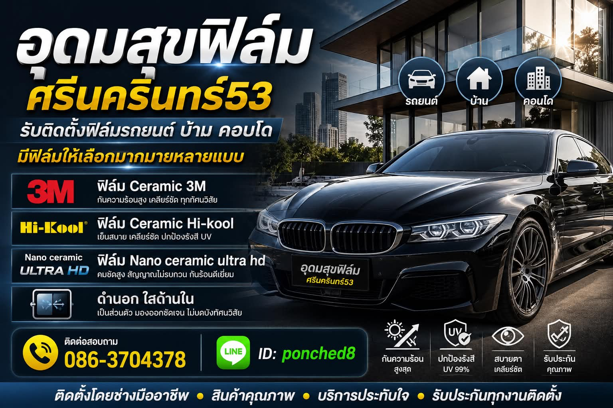

1. ติดฟิล์มรถยนต์
รับติดฟิล์มรถยนต์รอบคันสำหรับรถเก๋ง รถกระบะ รถ SUV รถตู้ และรถใช้งานทั่วไป เหมาะสำหรับลูกค้าที่ต้องการลดความร้อน ลดแสงจ้า เพิ่มความเป็นส่วนตัว และช่วยให้ขับรถสบายขึ้นในสภาพอากาศร้อนของกรุงเทพฯ

อุดมสุขฟิล์มศรีนครินทร์53 รับติดฟิล์มรถยนต์ ฟิล์มเซรามิก ลอกฟิล์มเก่า และติดฟิล์มบ้าน คอนโด อาคาร สำนักงาน บริการย่านศรีนครินทร์ 53 อุดมสุข บางนา อ่อนนุช พัฒนาการ และพื้นที่ใกล้เคียง
อุดมสุขฟิล์มศรีนครินทร์53 เป็นร้านบริการติดฟิล์มกรองแสงรถยนต์ ฟิล์มเซรามิก ลอกฟิล์มเก่า และติดฟิล์มอาคาร ตั้งอยู่บนถนนศรีนครินทร์ 53 แขวงหนองบอน เขตประเวศ กรุงเทพมหานคร เหมาะสำหรับลูกค้าย่านศรีนครินทร์ อุดมสุข บางนา อ่อนนุช พัฒนาการ ลาซาล แบริ่ง และพื้นที่ใกล้เคียงที่ต้องการติดฟิล์มรถยนต์กับร้านที่มีหน้าร้านชัดเจน ติดต่อได้จริง และมีผลงานติดตั้งจริง

สำหรับลูกค้าที่กำลังมองหาร้านติดฟิล์มรถยนต์ใกล้ฉันในย่านศรีนครินทร์ อุดมสุข หรือบางนา ร้านอุดมสุขฟิล์มศรีนครินทร์53 สามารถประเมินราคาเบื้องต้นตามรุ่นรถ ประเภทฟิล์ม และความเข้มที่ต้องการได้ก่อนเข้ารับบริการ
ทำเลเดินทางง่าย ใกล้อุดมสุข บางนา อ่อนนุช พัฒนาการ
ฟิล์มกรองแสง ฟิล์มเซรามิก ครบทุกความต้องการ
ฟิล์มเดิมซีด บวม เป็นฟอง ลอกแล้วติดใหม่ได้
มีตัวเลือกตามงบประมาณและการใช้งานจริง
ดูตัวอย่างงานจริงก่อนตัดสินใจเข้ารับบริการ
สอบถามราคาผ่านโทรศัพท์หรือ Line ได้เลย
สำหรับลูกค้าที่ค้นหา "ติดฟิล์มรถยนต์ใกล้ฉัน" ในย่านศรีนครินทร์ 53 อุดมสุข บางนา อ่อนนุช หรือพัฒนาการ ร้านรับติดฟิล์มครบวงจร ทั้งฟิล์มมาตรฐาน ฟิล์มเซรามิก และลอกฟิล์มเก่าติดใหม่
รับติดฟิล์มรถยนต์รอบคันสำหรับรถเก๋ง รถกระบะ รถ SUV รถตู้ และรถใช้งานทั่วไป เหมาะสำหรับลูกค้าที่ต้องการลดความร้อน ลดแสงจ้า เพิ่มความเป็นส่วนตัว และช่วยให้ขับรถสบายขึ้นในสภาพอากาศร้อนของกรุงเทพฯ

ฟิล์มเซรามิกเหมาะสำหรับลูกค้าที่ต้องการฟิล์มกันร้อนประสิทธิภาพสูง ภาพมองเห็นชัด และต้องการลดความร้อนภายในรถ โดยยังคงความสบายในการขับขี่ทั้งกลางวันและกลางคืน

สำหรับรถที่ฟิล์มเดิมเริ่มซีด บวม เป็นฟอง ลอก หรือทัศนวิสัยไม่ดี สามารถนำรถเข้ามาประเมินเพื่อลอกฟิล์มเก่าและติดฟิล์มใหม่ได้
ส่งรุ่นรถทาง Line รับราคาเบื้องต้น หรือโทรเช็กคิวว่างได้เลย
หากคุณกำลังค้นหา "ติดฟิล์มบ้านใกล้ฉัน" "ติดฟิล์มคอนโดใกล้ฉัน" หรือ "ติดฟิล์มอาคารใกล้ฉัน" และอยู่แถวศรีนครินทร์ 53 อุดมสุข บางนา อ่อนนุช พัฒนาการ ลาซาล หรือแบริ่ง ร้านอุดมสุขฟิล์มศรีนครินทร์53 รับติดฟิล์มกระจกบ้าน คอนโด อาคาร สำนักงาน และร้านค้า ส่งรูปกระจกหรือพื้นที่ทาง Line เพื่อรับราคาประเมินได้ทันที

ติดฟิล์มกระจกบ้านพักอาศัย ลดความร้อน ลดแสงจ้า และเพิ่มความเป็นส่วนตัว ประเมินราคาตามขนาดพื้นที่และจำนวนบานกระจก
ติดฟิล์มกระจกคอนโดมิเนียม ห้องชุด ระเบียง และกระจกอลูมิเนียม ประเมินราคาตามจำนวนบานกระจก
ติดฟิล์มกระจกอาคารและสำนักงาน ลดความร้อนเข้าตัวอาคาร ลดภาระแอร์ ประเมินราคาตามหน้างานจริง
ติดฟิล์มกระจกหน้าร้าน ลดแสงสะท้อน เพิ่มความเป็นส่วนตัว และปกป้องสินค้าจากแสงแดด ประเมินราคาตามพื้นที่จริง
ส่งรูปกระจกหรือพื้นที่ทาง Line เพื่อให้ร้านประเมินราคาเบื้องต้น หรือโทรสอบถามนัดวันเข้าดูพื้นที่
ราคาขึ้นอยู่กับรุ่นรถ ขนาดพื้นที่กระจก ยี่ห้อฟิล์ม ประเภทฟิล์ม และความเข้มที่เลือก ส่งรุ่นรถหรือรูปกระจกทาง Line เพื่อรับราคาประเมินเบื้องต้นก่อนเข้ารับบริการ
| แพ็กเกจ | รายละเอียด | ราคา |
|---|---|---|
| ฟิล์มมาตรฐาน | ฟิล์มกรองแสงทั่วไป ลดความร้อนและแสงจ้า | สอบถามราคา |
| ฟิล์มเซรามิก | กันร้อนสูง มองเห็นชัด ไม่รบกวนสัญญาณมือถือ/GPS | สอบถามราคา |
| ฟิล์มพรีเมียม (Nano Ceramic Ultra HD) | กันร้อนสูงสุด ดำนอกใสด้านใน | สอบถามราคา |
| ลอกฟิล์มเก่า ติดฟิล์มใหม่ | ลอกฟิล์มเดิมที่ซีด บวม เป็นฟอง แล้วติดฟิล์มใหม่ | ประเมินตามสภาพฟิล์มเดิม |
| แพ็กเกจ | รายละเอียด | ราคา |
|---|---|---|
| ติดฟิล์มบ้าน | ฟิล์มกระจกบ้านพักอาศัย ลดความร้อนและแสงจ้า | ประเมินตามขนาดพื้นที่ |
| ติดฟิล์มคอนโด | ฟิล์มกระจกคอนโด ห้องชุด ระเบียง | ประเมินตามจำนวนบานกระจก |
| ติดฟิล์มอาคาร / สำนักงาน | ฟิล์มกระจกอาคารและสำนักงาน ลดภาระแอร์ | ประเมินตามหน้างานจริง |
| ติดฟิล์มร้านค้า | ฟิล์มกระจกหน้าร้าน ลดแสงสะท้อน ปกป้องสินค้า | ประเมินตามพื้นที่จริง |
ราคาขึ้นอยู่กับรุ่นรถ ขนาดพื้นที่กระจก ยี่ห้อฟิล์ม ประเภทฟิล์ม ความเข้มที่เลือก และโปรโมชันปัจจุบัน ลูกค้าสามารถส่งรุ่นรถ รูปฟิล์มเดิม หรือรูปกระจกทาง Line เพื่อให้ร้านประเมินราคาเบื้องต้นก่อนเข้ารับบริการได้
หากคุณกำลังค้นหา "ติดฟิล์มรถยนต์ใกล้ฉัน" "ติดฟิล์มบ้านใกล้ฉัน" "ติดฟิล์มคอนโดใกล้ฉัน" หรือ "ติดฟิล์มอาคารใกล้ฉัน" และอยู่แถวศรีนครินทร์ 53 อุดมสุข บางนา อ่อนนุช พัฒนาการ หรือพื้นที่ใกล้เคียง ร้านอุดมสุขฟิล์มศรีนครินทร์53 สามารถกด Maps เพื่อนำทาง โทร หรือทัก Line เพื่อเช็กคิวได้ทันที ไม่ว่าจะเป็นงานติดฟิล์มรถยนต์หรือฟิล์มกระจกบ้าน คอนโด อาคาร สำนักงาน
ก่อนตัดสินใจติดฟิล์ม ลูกค้าสามารถดูตัวอย่างผลงานจริงจากรถที่เข้ารับบริการได้ ทั้งงานติดฟิล์มรอบคัน งานลอกฟิล์มเก่าติดใหม่ งานฟิล์มเซรามิก และงานติดฟิล์มอาคาร


รวมข้อมูลพื้นฐานที่ช่วยให้เลือกฟิล์มได้ตรงกับการใช้งานจริง ก่อนเข้ารับบริการที่อุดมสุขฟิล์มศรีนครินทร์53
ฟิล์มกรองแสงรถยนต์ คือแผ่นฟิล์มบางที่ติดบนกระจกรถ เพื่อช่วยลดความร้อนจากแสงแดด ลดแสงจ้า ลดรังสี UV และเพิ่มความเป็นส่วนตัว โดยยังคงทัศนวิสัยในการขับขี่
ฟิล์มเซรามิกใช้อนุภาคเซรามิกในการกันความร้อน จึงกันร้อนได้สูงโดยไม่รบกวนสัญญาณมือถือหรือ GPS และให้ภาพที่มองเห็นชัดทั้งกลางวันและกลางคืน ต่างจากฟิล์มปรอท/โลหะที่อาจสะท้อนแสงและรบกวนสัญญาณ
ตัวเลขฟิล์มมักใช้เรียกระดับความเข้มหรือการมองเห็นโดยประมาณ ฟิล์มเข้มจะเป็นส่วนตัวมากแต่มองตอนกลางคืนยากกว่า ส่วนฟิล์มอ่อนจะมองเห็นชัดกว่า ควรเลือกตามการใช้งานจริง เช่น ขับกลางคืนบ่อยหรือต้องการความเป็นส่วนตัว
ช่วยลดความร้อนภายในรถ ลดการทำงานของแอร์ ลดแสงจ้าขณะขับขี่ ปกป้องผิวและเบาะจากรังสี UV เพิ่มความเป็นส่วนตัว และช่วยให้ขับรถสบายขึ้นในสภาพอากาศร้อนของกรุงเทพฯ
ฟิล์มกรองแสงคุณภาพดีประกอบด้วยหลายชั้นทำงานร่วมกัน แต่ละชั้นมีหน้าที่ต่างกันดังนี้
ชั้นนอกสุดที่สัมผัสแสงแดดก่อน ทำหน้าที่สะท้อนและกรองพลังงานความร้อนจากแสงอาทิตย์ ลดความร้อนสะสมภายในรถหรืออาคาร
ลดความจ้าของแสงแดดที่เข้าตา ช่วยให้มองเห็นชัดขึ้นขณะขับขี่หรืออยู่ในพื้นที่ที่มีแสงแดดจัด โดยไม่บังทัศนวิสัย
ลดการมองเห็นจากภายนอกเข้าสู่ภายใน เพิ่มความเป็นส่วนตัวให้ผู้โดยสารหรือผู้ใช้งานพื้นที่ ตามระดับความเข้มที่เลือก
ชั้นในสุดที่ยึดฟิล์มเข้ากับกระจกอย่างแน่นหนา หากชั้นนี้เสื่อมสภาพ ฟิล์มจะเริ่มบวม เป็นฟอง หรือหลุดลอก ซึ่งเป็นสัญญาณว่าควรลอกฟิล์มเก่าและติดฟิล์มใหม่
รวมคำถามที่ลูกค้าถามบ่อยก่อนตัดสินใจติดฟิล์มกับอุดมสุขฟิล์มศรีนครินทร์53
โทร ทัก Line หรือเปิดแผนที่มาที่ร้านได้เลย เปิดบริการทุกวัน 09:30–19:00 น.